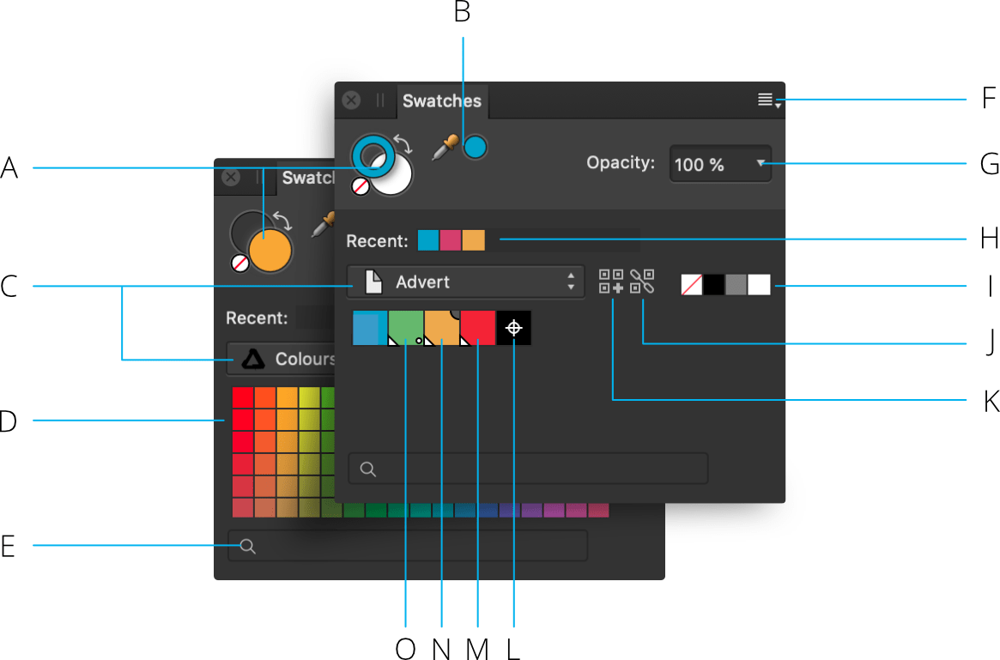
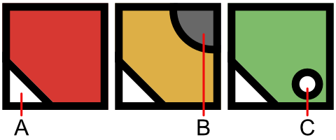

The Swatches panel makes it easy to use predefined colors, and also to define, store and reuse your own selection of colors.
About the Swatches panel
The Swatches panel stores your recently used colors and lets you access a range of predefined palettes, each containing solid or gradient fill swatches. These can be selected for use with various tools and for applying directly to objects. You can also create and store your own swatches as custom color palettes either for the document, application or system-wide, as well as import any exported Affinity .afpalette from other users or import Adobe Swatch Exchange (ASE) palettes.
The Swatches panel stores your recently used colors and lets you access a range of predefined palettes, each containing solid or gradient fill swatches. These can be selected for use with various tools and for applying directly to objects. You can also create and store your own swatches as custom color palettes either for the document or application, as well as import any exported Affinity .afpalette from other users or import Adobe Swatch Exchange (ASE) palettes.
As well as accessing palette, you can create global and spot colors, and make colors overprint. Your registration color can also be customized.

Swatches panel: (A) Primary/Secondary (left) or Stroke/Fill color selectors with color 'none' swatch and 'swap' arrow, (B) Color picker tool and picked color swatch, (C) Category list (showing Application, left, and Document, right), (D) Category color palette swatches, (E) Search, (F) Panel Preferences, (G) Opacity control, (H) Recently used colors, (I) None, Black, Mid-gray and White swatches, (J) Add current color to palette as a global color, (K) Add current fill to palette, (L) Registration color, (M) Global color, (N) Overprint color, (O) Spot color.

Markings which distinguish specialist color swatches: (A) Global, (B) Overprint, (C) Spot.
Like the Color panel, the Swatches panel has different states depending on the active Persona and on the selected tool. The large color swatch selectors indicate the currently selected colors.
In Designer Persona, objects have fill and stroke color properties. The stroke color is represented by the cutout (donut) color selector. The fill is represented by the solid color selector.
In Pixel Persona, the two solid color selectors indicate interchangeable Primary and Secondary colors.
The Swatches panel also shows None, Black, Mid-gray and White swatches, recently used colors and an opacity control. Swatches are organized into color palettes by category.
Working with palettes
The ten most recently used colors are automatically added to the panel on a temporary basis. You can permanently store custom colors and gradients that you use most often in any of the palettes or you can create custom palettes to host them.
The following types of palette exist within Affinity Designer:
Document—these palettes are saved within the current document.
Application—these palettes are saved within Affinity Designer. These palettes are available to any Affinity Designer document.
System—these palettes are saved to your operating system. These palettes are available within Affinity Designer and other applications installed on your system.
PANTONE®—these palettes are based on PANTONE® Colors. These palettes are available to any Affinity Designer document.
Saving and deleting custom color palettes
To create a new palette:
Click Panel Preferences and choose an Add Palette option.
To save a color or gradient to a palette:
On the Swatches panel, select a palette from the palette pop-up menu.
Do one of the following:
-click an object, then from the pop-up menu, click Add to Swatches and choose to add color from fill, stroke or both.
Select Add current color to palette. Use the Stroke/Fill color selector to target the color.
To edit a saved swatch:
Double-click a saved swatch.
To delete a saved swatch:
-click the swatch you want to remove and choose Delete Fill from the pop-up menu.
Generating a palette from document
You can generate a palette from the colors used throughout your document.
To generate a palette from document:
Click Panel Preferences and choose an option from Create Palette from Document.
A new palette is created (named after the document) using all the colors currently in the document.
Sharing custom palettes
You can also share custom color palettes for use by other Affinity users.
To export a color palette:
Choose the palette you want to export from the palette pop-up menu.
Click Panel Preferences and choose Export Palette from the menu.
Type a name for the exported file, choose the disk location you want to save it to and click Save.
Setting default palettes
Any palette can be set as the default used for specific color formats. For example, you can set RGB/8 documents to have a different default palette to CMYK/8 documents.
To set a default palette:
On the Swatches panel, select a palette from the palette pop-up menu.
Click Panel Preferences and choose a color format option from the Set as Default for from the pop-up menu.
 To create a new palette:
To create a new palette: